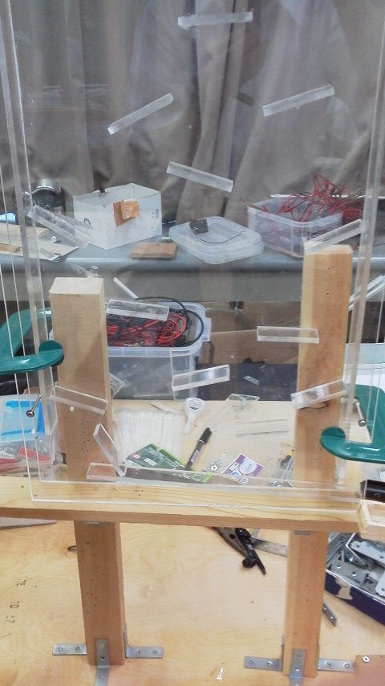

ベルトコンベアー
モーターを回転させてベルトを回し、球を1m以上も持ち上げる事のできる装置。大と小の二種類がある。
観覧車
複数の球を一気に持ち上げる装置。
モーターで木製の円盤を直接回し、穴に球を入れてゆっくり上昇させる。

加速器
高速で回転するタイヤで球を加速させ、急斜面を登らせて上昇させる。

分岐
球を確実に左右に分ける事のできる装置。
真ん中の羽根が球を通過させる毎に、左右交互に壁を作るようになっている。
パチンコ
球をランダムに左右に流す事のできる装置。大と小の二種類がある。

カタカタ
球を左右に転がしながら降ろす装置。バルサのみで作成できるため手軽。
アクリル製で、裏からも見える「裏カタカタ」もあり、高い所に設置する。
アサオカ
アクリルの中を球が音を立てて落ちていく装置。
名前の由来はこの装置の発案者。

ループ
球が一回転または三回転し、空中を飛ぶ装置。
飛ばす距離の調整がとても大変。かつては2ループもあったらしい…


シーソー
球がバルサでできた通路の上を行ったり来たりしながら下降していく装置。

鉄琴
球が通る際音が鳴る装置。よく幼児用おもちゃで見る鉄琴を分解し、ピタゴラ用に組み替えたもの。
バベルの塔
球が塔に刺さっているつまようじの上を転がる落ちる装置。
調整がとても難しく途中で止まってしまうことが多い。名前の由来は不具合が多く調整の難易度が高いこと。